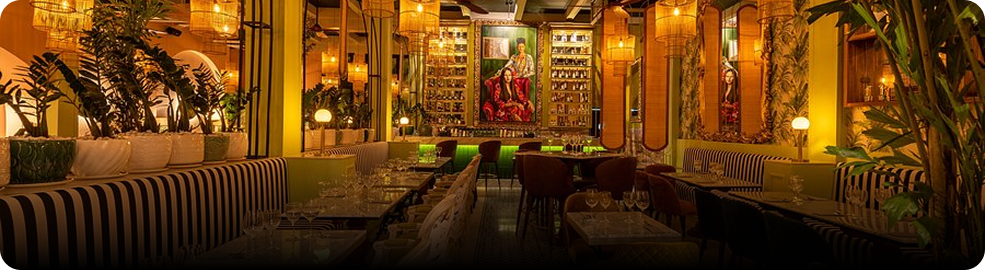

 Bairro Jardim Primavera
Bairro Jardim Primavera
Avaliações

O restaurante Villa Bellini é muito bom no geral e conta com acesso por rampa, o que já é um ponto positivo para quem tem mobilidade reduzida. Além disso, o ambiente é agradável e bem organizado, proporcionando conforto aos clientes durante a permanência no local. O atendimento também se destaca, sendo cordial e atencioso, o que contribui para uma experiência ainda mais satisfatória. Outro aspecto relevante é a qualidade dos pratos oferecidos, que apresentam bom sabor e uma apresentação cuidadosa.
Ver MaisO Villa Bellini apresenta um bom nível de acessibilidade, com rampa de acesso que facilita a entrada de pessoas com mobilidade reduzida, além de banheiro adaptado. Esses recursos demonstram a preocupação em oferecer um ambiente mais inclusivo e confortável para todos os clientes.
Ver MaisO Villa Bellini demonstra preocupação com a acessibilidade ao disponibilizar rampas de acesso e espaços que facilitam a circulação, tornando o ambiente mais inclusivo e confortável para pessoas com mobilidade reduzida.
Ver Mais